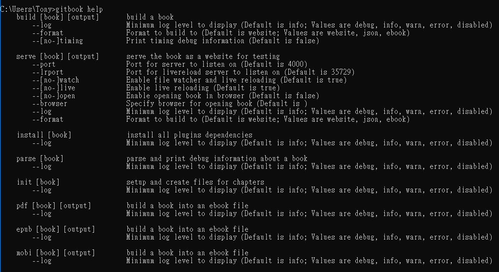

安裝 GitBook
註：需先安裝NodeJs 安裝教學點此
[STEP1] 首先先下指令安裝 Gitbook
npm install -g gitbook
安裝完後輸入 gitbook help，預期會出現以下畫面。

相關指令可點此參考
[STEP2] 安裝Gitbook CLI
npm install -g gitbook-cli
[STEP3] 建立Gotbook
- 首先建立一個空目錄，例如 mybook，接著切換（cd mybook）到該目錄下。
在空目錄中輸入
gitbook init，此時目錄下會新增兩個檔案：
README.md與SUMMARY.md，這些是除了實際內容檔案之外，GitBook 製書的兩個必要檔案。- 你可以開始新增內容檔案，例如 forword.md、ch1.md 等等，打開你喜歡的純文字編輯器，開始寫書。
- 添加一些內容之後，記得把要構成實際內容的檔案，加入到
SUMMARY.md檔案中。
此時可以輸入
gitbook serve
依照指示在瀏覽器中輸入 http://localhost:4000，就會看到與 GitBook 網站一模一樣的網頁版電子書。修改一些文字、儲存，你會看到網頁自動重載、更新了。